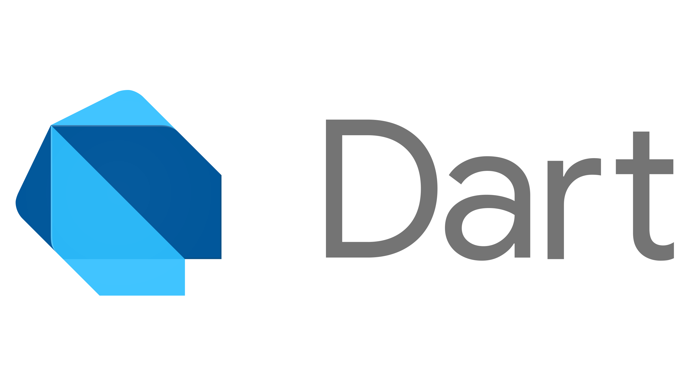
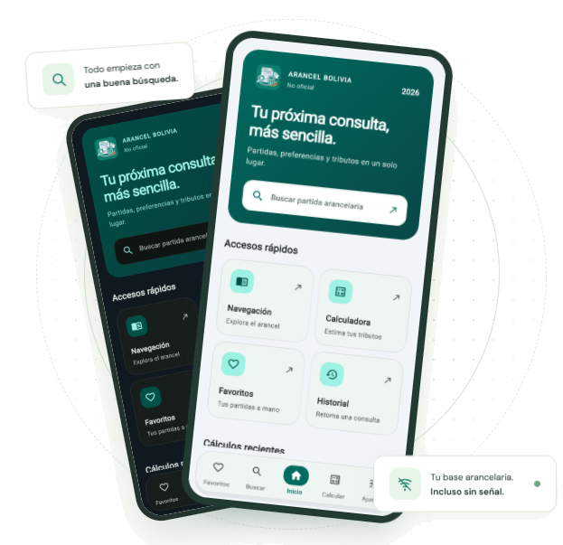
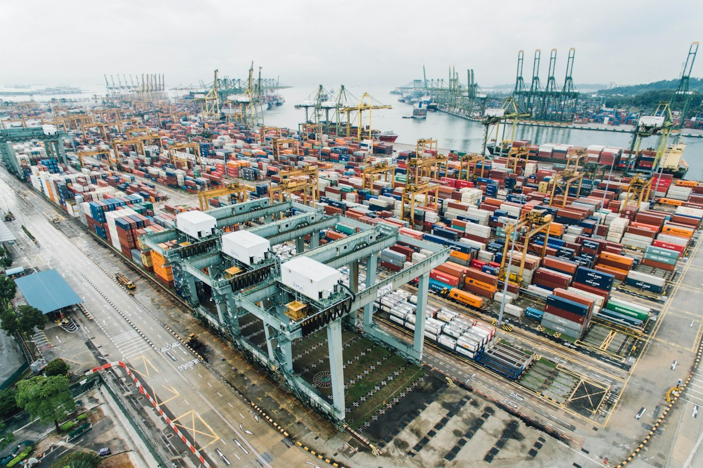
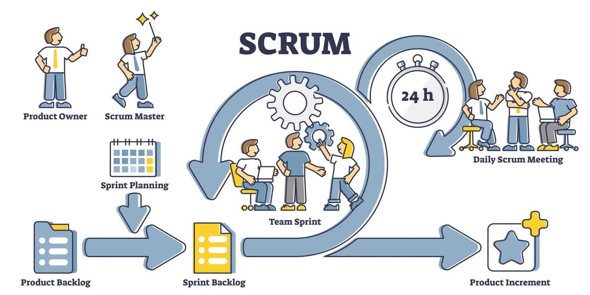
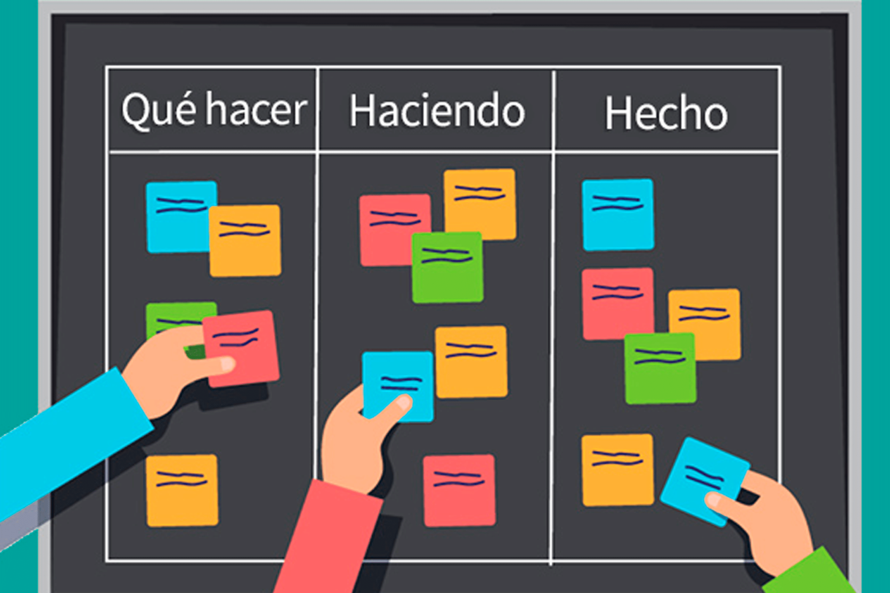

Técnica
Flutter y Dart construyen la pantalla y la lógica. SQLite guarda el catálogo en el dispositivo, así que las funciones principales se usan sin una conexión permanente.
Consulta de partidas y cálculo de tributos en una aplicación móvil con enfoque educativo.

Desarrollar una aplicación móvil para la consulta de partidas del arancel aduanero de Bolivia y el cálculo de tributos correspondientes, con el propósito de optimizar el acceso a información arancelaria para estudiantes, profesionales del área de comercio exterior y demás usuarios interesados, mediante una herramienta digital accesible y de uso eficiente.


Facilitar la búsqueda y consulta de códigos arancelarios mediante una interfaz que permita navegar por la información y comprender sus resultados.
Automatizar el cálculo de tributos aduaneros a partir de los datos ingresados por el usuario y de las tasas contempladas en el alcance del sistema.
Favorecer la consulta arancelaria y el cálculo de tributos sin conexión a internet mediante datos locales, con acceso en línea para los servicios complementarios que lo requieran.
Organizar el acceso digital a notas, disposiciones y requisitos asociados a las mercancías para reducir la dependencia de documentos impresos extensos.
Preservar la integridad de la información y la estabilidad del sistema mediante controles de entrada, consentimiento y procedimientos de verificación.
Evaluar la viabilidad técnica y económica de la propuesta de negocio mediante costos, estimación de esfuerzo y escenarios de ingresos.

Flutter y Dart construyen la pantalla y la lógica. SQLite guarda el catálogo en el dispositivo, así que las funciones principales se usan sin una conexión permanente.

La consulta gratuita y las ayudas de términos apoyan el uso educativo de estudiantes, docentes y profesionales de comercio exterior.

Publicidad, Premium de pago único y apoyo voluntario son las vías de sostenimiento. El documento separa costos de operación, inversión inicial y valoración del trabajo de desarrollo.



| HISTORIA DE USUARIO | |
|---|---|
| Número: HU-03 | Usuario: Usuario |
| Nombre de Historia: Búsqueda de partidas por texto | |
| Días estimados: 4 | Prioridad: Alta |
| Descripción: Como usuario quiero buscar una partida escribiendo texto para encontrarla sin conocer el código. | |
| Observaciones: Se apoya en el índice de texto completo (FTS5). | |
Tabla 11.2 del documento. Elaboración propia. Historia principal de búsqueda.
Quien consulta el arancel necesita encontrar partidas, entender las notas y revisar tributos sin depender de un documento de más de 500 páginas.
| Perfil | % |
|---|---|
| Estudiantes | 53,85 % |
| Operadores | 3,85 % |
| Importadores | 11,54 % |
| Otros | 30,77 % |
| Total | 100 % |
El 77 % dice conocer términos aduaneros. Muestra por conveniencia: describe perfiles, no mide demanda ni disposición de pago.
Comparación por tipo de alternativa, no un censo de aplicaciones.
La difusión prioriza canales propios y contactos académicos, sin pauta pagada.
 Play Store: ficha y publicación (distribución)
Play Store: ficha y publicación (distribución) TikTok
TikTokPreparación y lanzamiento en el mes 1; difusión en los meses 2 a 4 y contenido hasta el 6.
Consulta, búsqueda, cálculo, documentos, favoritos e historial, con publicidad.
Los anuncios solo aparecen con internet. Las donaciones voluntarias (Ko-fi o QR) no desbloquean funciones.
Las mismas funciones, sin publicidad, con un pago único de Bs 25 (precio supuesto).
La comisión por venta es del 15 %: de cada Bs 25 quedan Bs 21,25 para la operación.
Ambas ediciones conservan las mismas funciones. El pago retira la publicidad.
Año 1 base: 900 activos gratuitos, 50 compras nuevas y Bs 86,40 de publicidad. Son supuestos comerciales pendientes de validación.
| Destino | Monto Bs |
|---|---|
| Apertura: registro y logo | 392,75 |
| Reserva de caja | 11.607,25 |
| Capital en efectivo | 12.000,00 |
Aporte propio: Bs 7.500. Apoyo familiar: Bs 4.500, sin devolución prevista. Es dinero para operar, no ventas.
Bs 36.161,20 por cinco meses de trabajo individual, estimados en 760 horas.
USD 662,90 al mes × 5 meses × Bs 10,91/USD. Valora el trabajo propio; no es un pago real.
La operación cuesta Bs 3.400 al año antes de comisiones. La reserva cubre los primeros déficits.
Inversión inicial valorada: Bs 48.161,20 (efectivo + software). Saldo tras la apertura: Bs 47.768,45.
| Concepto | Año 1 | Año 2 | Año 3 | Año 4 | Año 5 |
|---|---|---|---|---|---|
| Ingresos Bs | 1.336,40 | 3.353,60 | 6.740,00 | 10.836,00 | 15.432,00 |
| Gastos Bs | 3.587,50 | 3.880,00 | 4.375,00 | 4.975,00 | 5.650,00 |
| Saldo anual Bs | −2.251,10 | −526,40 | 2.365,00 | 5.861,00 | 9.782,00 |
| Escenario | Supuestos principales | Acumulado | VAN operativo |
|---|---|---|---|
| Favorable | Adopción +20 %, costos −5 % y apoyo neto | 27.250,70 | 17.696,02 |
| Base | Proyección central, sin apoyo voluntario | 14.837,75 | 8.979,61 |
| Desfavorable | Adopción −20 %, costos +10 % y sin apoyo | 6.021,71 | 2.763,24 |
Gastos anuales cubiertos: año 3. Apertura y operación recuperadas: año 4.
VAN al incluir el desarrollo propio: −Bs 31.581,65
Al año 5 faltan Bs 21.323,45 para recuperar el desarrollo y la apertura, sin descuento. Los acumulados y VAN de la tabla son operativos. Flujos antes de tributos y remuneración recurrente.
La aplicación integra consulta y cálculo dentro del alcance definido. Su continuidad exige ampliar la evaluación técnica y validar el negocio.
La etapa siguiente debe comprobar el uso real y su sostenimiento. Se recomienda: